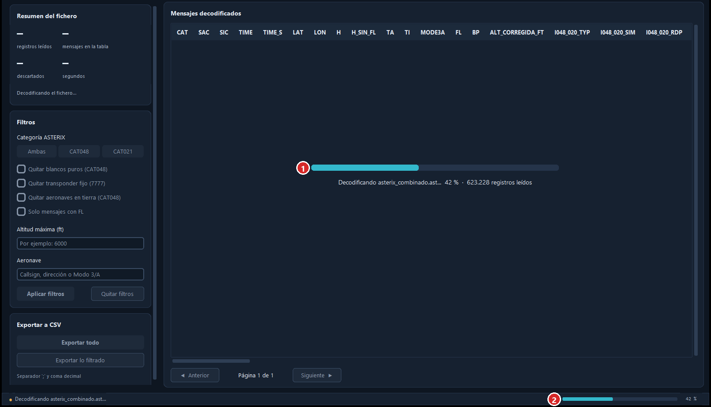
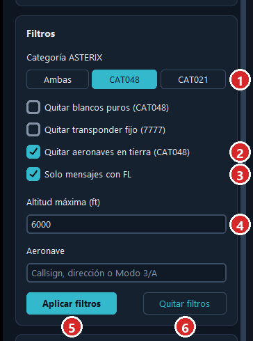
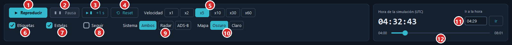

CAT048 · CAT021
Decodificador ASTERIX
Manual de uso

PGTA · Proyecto 2
Grupo G2
Noviembre de 2026
CAT048 · CAT021
Manual de uso
PGTA · Proyecto 2
Grupo G2
Noviembre de 2026
El Decodificador ASTERIX lee ficheros .ast con mensajes CAT048 (radar de Barcelona) y CAT021 (ADS-B).
Muestra los mensajes en una tabla, permite filtrarlos y exportarlos a CSV, y simula las trayectorias de los aviones en un mapa.
Descomprime el .zip de la entrega. DecodificadorASTERIX.exe está en la raíz, junto a este manual.
Haz doble clic en DecodificadorASTERIX.exe. No hace falta instalar nada (Windows de 64 bits). Tarda unos segundos en abrirse.
Si Windows muestra el aviso «Windows protegió su PC», pulsa «Más información» y después «Ejecutar de todas formas».
Ficheros .ast. No van en la entrega. Son los de la asignatura: asterix_radar.ast, asterix_adsb.ast y asterix_combinado.ast. Pueden estar en cualquier carpeta del equipo.
Internet. El mapa de la simulación necesita conexión a internet. El resto funciona sin conexión.
Volver a generar el ejecutable. Doble clic en Codigo\crear_exe.bat (hace falta Python 3). La primera vez tarda unos minutos y necesita internet.
Hace falta Python 3 instalado; el proyecto se ha probado con Python 3.14. Abre una terminal en la carpeta Codigo y escribe:
python -m venv .venv.venv\Scripts\python -m pip install -r requirements.txt.venv\Scripts\python main.pyLos pasos 1 y 2 solo se hacen la primera vez. Después basta con el paso 3.
Pulsa Abrir fichero .ast 1. Está arriba a la derecha y, al empezar, también en el centro de la tabla.

En la ventana de Windows, ve a la carpeta del fichero, elígelo y pulsa Abrir.
Espera a que se decodifique. La barra grande 1 y la de abajo 2 muestran el avance. En nuestro equipo, el fichero combinado tarda unos 20 s.

Al acabar, Resumen del fichero muestra los registros leídos, los mensajes que hay en la tabla, los descartados y los segundos que ha tardado.
Debajo está el detalle por categoría y por motivo de descarte.
No entran en la tabla los mensajes fuera de 40,9–41,7° N y 1,5–2,6° E, los CAT021 en tierra y los mensajes sin posición.

La tabla Mensajes decodificados tiene todos los mensajes, en el orden del fichero. Sus columnas son las mismas que las del CSV.

Una celda vacía quiere decir que el mensaje no trae ese dato.
Ejemplo: la entrada del P3 con asterix_combinado.ast.

Los filtros solo se aplican al pulsar Aplicar filtros. Se pueden combinar todos.
Si pasas el ratón por encima de un filtro, sale una ayuda con lo que hace.


Pulsa Exportar todo o Exportar lo filtrado.
En la ventana Guardar CSV, elige la carpeta y el nombre, y pulsa Guardar.
Al acabar sale el aviso Exportación terminada, con el número de mensajes y la ruta del fichero.
«#######» en Excel. La columna es demasiado estrecha (pasa con la hora, TIME). Ensánchala: doble clic en el borde derecho de su cabecera, o Formato > Autoajustar ancho de columna.
Excel. Si abres el CSV con doble clic, Excel quita el cero inicial del Modo 3/A (por ejemplo, 0437 pasa a 437) y puede leer alguna dirección Modo S (TA) como número.
Para verlas igual que en la aplicación, importa el CSV desde Excel y pon las columnas MODE3A y TA como Texto.
Pulsa Simulación, en el centro de la parte de arriba.
Se simula lo que está filtrado en la pestaña Datos. El aviso azul encima del mapa dice cuántos mensajes se simulan y con qué filtros. Para simularlo todo, pulsa Quitar filtros en Datos.
Usa los controles de encima del mapa. A su derecha está la Hora de la simulación (UTC).

| Control | Qué hace | |
|---|---|---|
| 1 | Reproducir | Avanza la simulación de 1 s en 1 s de hora del día. |
| 2 | Pausa | Para la simulación. Al cambiar a la pestaña Datos, la simulación se pausa. |
| 3 | +1 s | Avanza un solo salto de 1 s. |
| 4 | Reset | Para la simulación y vuelve a la primera hora de los datos. |
| 5 | Velocidad | De x1 a x60. Cada salto es siempre de 1 s; la velocidad solo cambia cada cuánto se dibuja (x1: un salto por segundo; x60: 60 saltos por segundo). |
| 6 | Sistema | Ambos, Radar (CAT048) o ADS-B (CAT021). Con Ambos, un avión que ven los dos sistemas sale dos veces. |
| 7 | Ir a la hora | Escribe la hora (UTC) como hh:mm y pulsa Ir o Intro. Cada avión aparece en su última posición conocida antes de esa hora. |
| 8 | Etiquetas | Muestra u oculta el callsign de cada avión (o su dirección Modo S si no tiene). |
| 9 | Estelas | Muestra u oculta la línea con las últimas posiciones de cada avión. |

Haz clic en un avión. Se pone en rojo 1 y, si el otro sistema también lo ve, su pareja también 2.
En el ejemplo, 1 es el radar y 2 el ADS-B del mismo avión (VLG8FU).
Colores: azul, radar; naranja, ADS-B; rojo, el avión seleccionado y su pareja.
A la derecha, de arriba abajo: la Leyenda (recogida al empezar; se despliega pulsando su cabecera), cuántos hay En el mapa (radar, ADS-B y blancos puros) y el Avión seleccionado con sus datos (callsign, dirección Modo S, Modo 3/A, FL, posición y, en radar, velocidades y rumbo); si no caben, el panel baja con la rueda del ratón o el panel táctil. Con su selector Radar / ADS-B pasas a los datos del mismo avión en el otro sistema, sin tocar el mapa (en gris si no está en el mapa por ese sistema).

| Problema | Qué hacer |
|---|---|
| Al abrir el .exe sale «Windows protegió su PC». | Es el aviso de SmartScreen, porque el ejecutable no está firmado. Pulsa «Más información» y después «Ejecutar de todas formas». |
| El .exe tarda en abrirse. | Es normal: se descomprime al arrancar. No lo abras dos veces. |
| El mapa se ve gris. | No hay conexión a internet. El mapa descarga sus imágenes de OpenStreetMap: conéctate y mueve un poco el mapa. |
| En la simulación no se ve nada. | Revisa los filtros de Datos (los dice el aviso azul) y el selector Sistema. Si sale un mensaje en el mapa, dice qué hacer. |
| Aparecen puntos grises que desaparecen enseguida. | Son blancos puros (ecos de radar primario o secundario, sin Modo S). Se quitan con el filtro «Quitar blancos puros». |
| Excel muestra «#####» o quita ceros. | Ensancha la columna o importa como texto (apartado 6). |